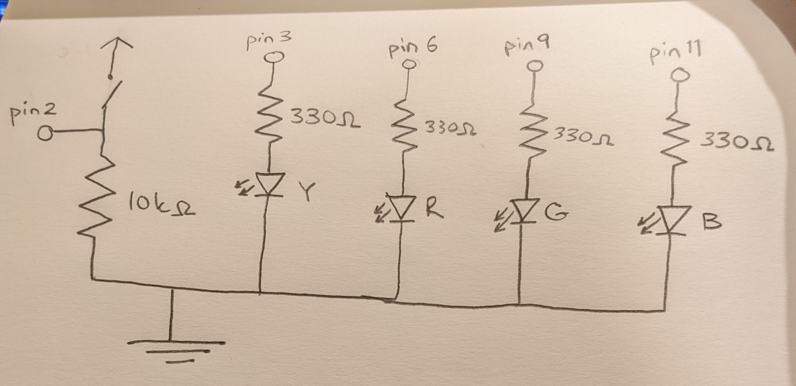
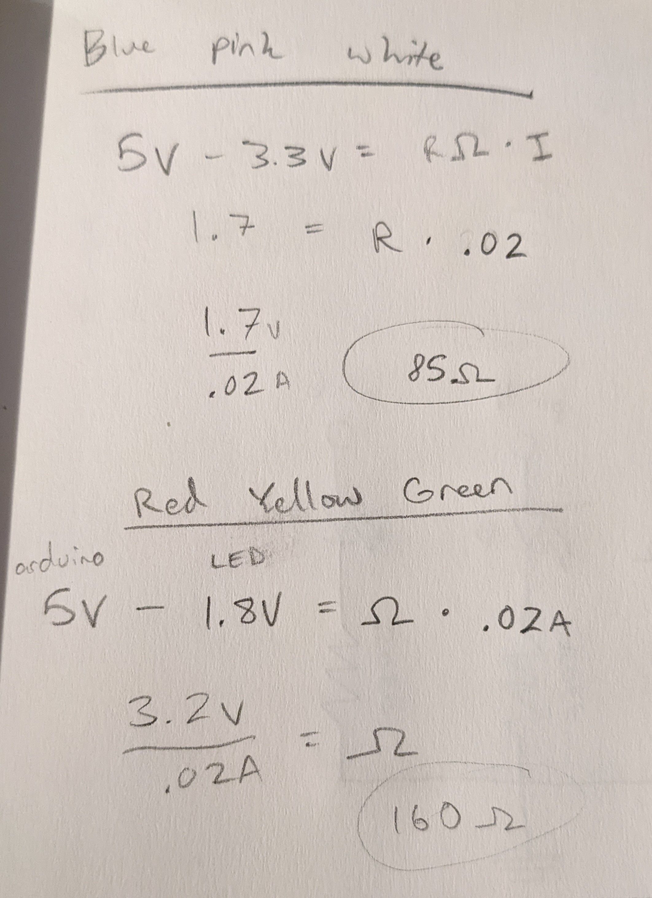
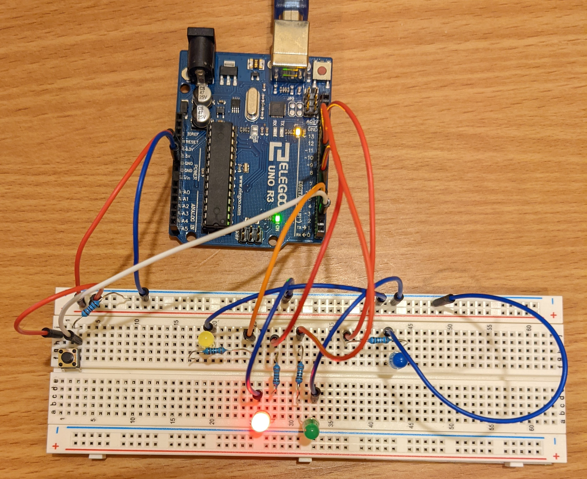

A button connects 5V power to the Arduino's pin 2, which will read in whether the button is pressed down. These are also connected to a resistor and then ground. Four LEDs are connected to their own resistors and arduino pins, as well as ground.

To have 20mA of current, the blue LED would need 85 ohms of resistance. The red, yellow, and green LEDs would need 160 ohms. I decided to use 330 ohms for all of them because it simplifies things, and I'm fine with a bit less current through them.
The button also needs a resistor to prevent a short to ground. I chose to use a 10k ohm resistor because it's enough resistance to ensure the circuit doesn't short and the Arduino reads low when the button is not pressed. Since nothing exploded when we used this value for a pull down resistor in class, I figured it was a good resistance.
Circuit in Action

This is the circuit, all hooked up.Here I'm pressing the button to toggle the green LED on, then pressing again to toggle it off. The yellow LED lights up when I'm pressing the button down, and the red LED is lit while the button is not pressed.As I hold the button down, the blue LED gradually becomes dimmer until it turns off completely.
/*
File: FadeProj1.ino
Author: Max Coppock
with help from the Debounce Arduino example
The yellow LED turns on while the button is pressed down.
The red LED turns on while the button is not pressed down.
The green LED fades on/off with each button press.
The blue LED starts on and fades to off gradually while
the button is pressed down.
*/
//lines 2-5 define the pins used for the LEDs. All are analogWrite capable.
const int yel = 3;
const int red = 6;
const int gre = 9;
const int blu = 11;
//variable for the current button state, used to debounce
int currButtonState;
//variable for the last button state, used to debounce
int lastButtonState = LOW;
//variable for the brightness of the blue LED
//acceptable values are 0-255 for use with AnalogWrite
int bluBrightness = 180;
//variable for the current state of the green LED, starting off
int greState = LOW;
//time (ms) when the button was last changed, for debounce
unsigned long lastDebounceT = 0;
//delay time (ms) to wait before accepting the button state really changed
unsigned long debounceDelay = 50;
void setup() {
//setting the mode of our button input pin
pinMode(2, INPUT);
//setting the mode of our LED output pins: yellow, red, blue, green
pinMode(yel, OUTPUT);
pinMode(red, OUTPUT);
pinMode(blu, OUTPUT);
pinMode(gre, OUTPUT);
//start a serial monitor to debug with print statements
Serial.begin(9600);
}
void loop() {
//read the current button state, save as buttonRead
int buttonRead = digitalRead(2);
//if the button is pressed
if(buttonRead){
//turn yellow LED on
digitalWrite(yel, HIGH);
//turn red LED off
digitalWrite(red, LOW);
//if the blue LED is still on at all
if(bluBrightness > 0){
//if the brightness variable is greater than 30
if(bluBrightness > 30){
//decrease the bluBrightness value by 5
//dims the blue LED when we call analogWrite later
bluBrightness = bluBrightness - 5;
} else{
//the brightness value is getting close to 0, so we
//slow down for dramatic effect.
//decrease the bluBrightness value by 2 to dim the LED
bluBrightness = bluBrightness -2;
}
//wait 200ms so blue LED brightness doesn't decrease to 0 instantly
delay(200);
}
}
//if button is not pressed
else {
//turn yellow LED off
digitalWrite(yel, LOW);
//turn red LED on
digitalWrite(red, HIGH);
}
//set the blue LED to the bluBrightness value
analogWrite(blu, bluBrightness);
//DEBOUNCING
//check if the button state has changed
if (buttonRead != lastButtonState){
//if it has, set the time of the last debounce to current milliseconds
lastDebounceT = millis();
}
//check if the current button reading stays longer than the debounceDelay
if ((millis() - lastDebounceT) > debounceDelay){
//check if the button reading is different than the current button state
//from the last time we were here
if (buttonRead != currButtonState){
//update the current saved button state to the reading coming in
currButtonState = buttonRead;
//DEBOUNCED
//if the button is pressed down
if (currButtonState == HIGH){
//toggle the state of the green LED
greState = !greState;
//if the new state of the green LED is low...
if(greState == LOW){
//do the for loop to fade it bright to dark
//int i will start at 150 and decrease by 1 every 8 milliseconds
for(int i=150; i>=0; i--){
//set the green pin to be on for i/255 % of the time
analogWrite(gre, i);
//wait those 8ms
delay(8);
}
}
//if the state of the green LED is now high...
else{
//do the for loop to gradually brighten it
//i will start at 0 and increase by 1 every 10 milliseconds
for(int i=0; i<150; i++){
//set the green pin to be on for i/255 % of the time
analogWrite(gre, i);
//wait those 10ms
delay(10);
}
}
}
}
}
//save the current button reading to be the lastButtonState for the next loop
lastButtonState = buttonRead;
}